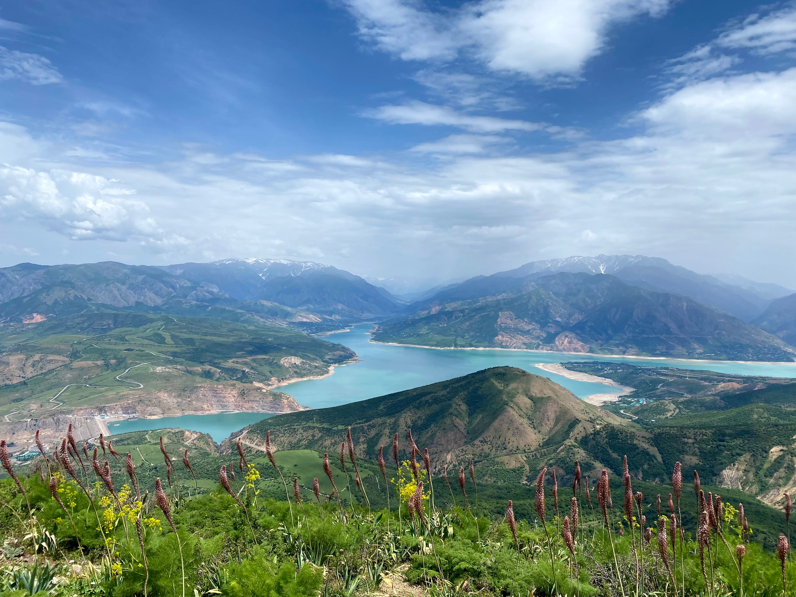
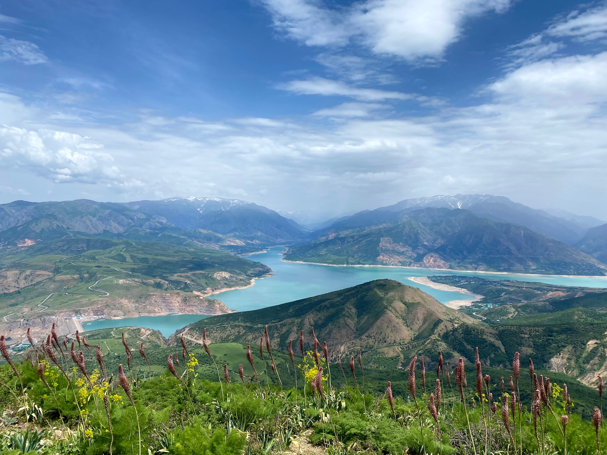
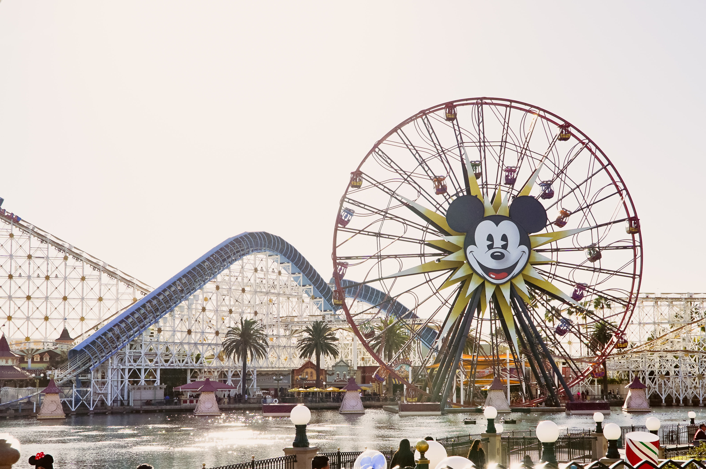
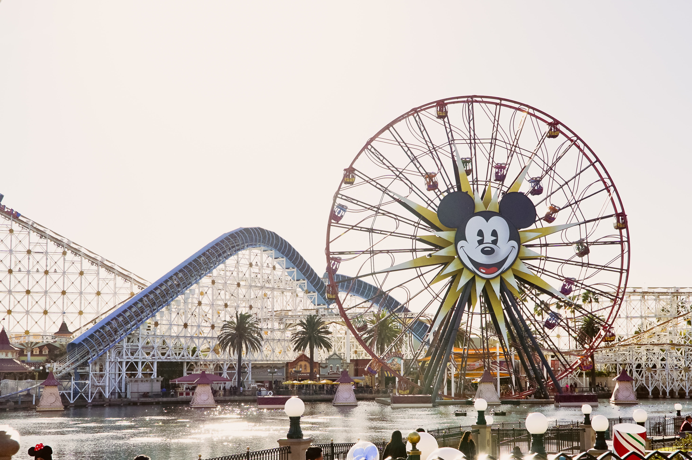

The average price for a trip to Disneyworld for 8 days exceeds $1500 per person (including flights). Almost 7 million annual visits makes Disneyworld one of the country's most popular tourist destinations. Although Disneyworld has a lot to offer, for a similar price you may take your family on an exciting adventure in Uzbekistan. From the stunning ancient city of Samarkand to the breath-taking blue mosques that cover the nation; Uzbekistan will leave you with unforgettable memories.
In addition to the incredible sceneries, historic sites, and mouth-watering food; you will also be able to immerse yourself in a unique culture. By learning about this nation you will help bridge the gap between cultures on opposite sides of the globe.


 



 
